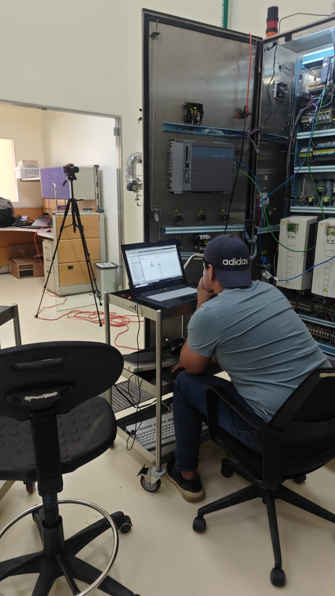
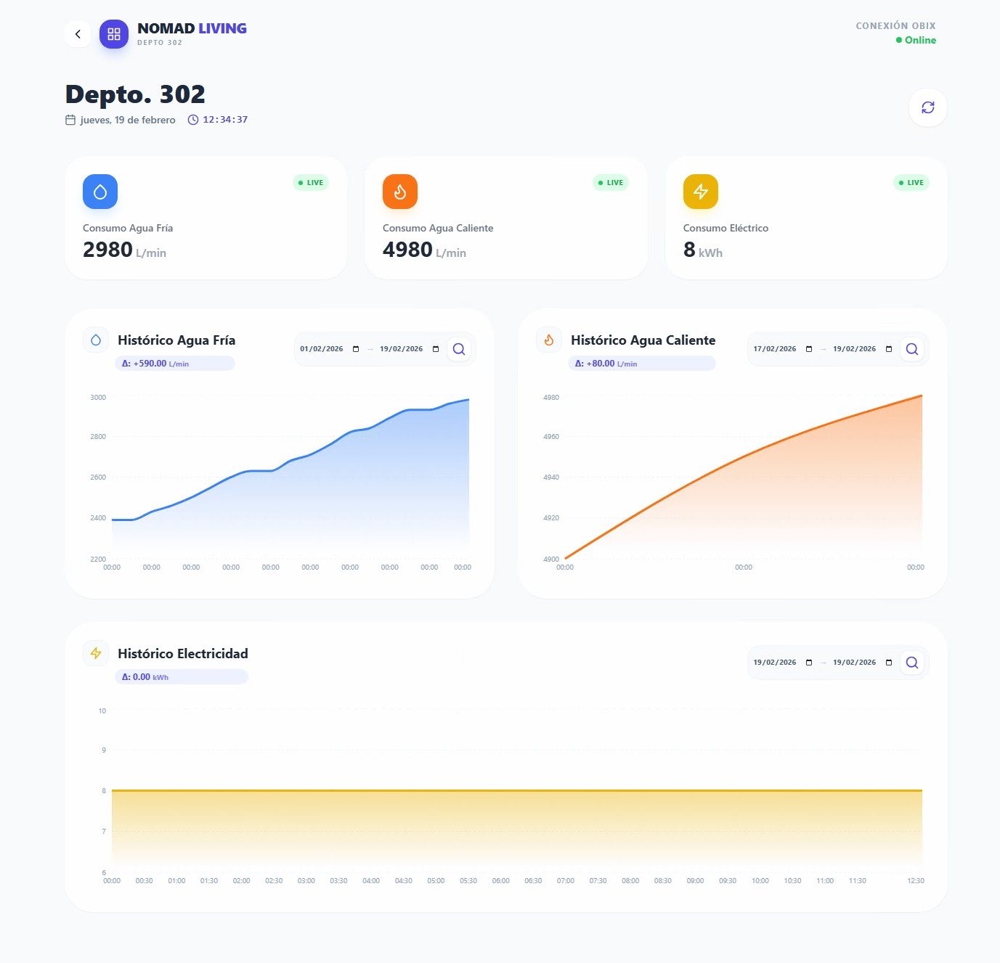
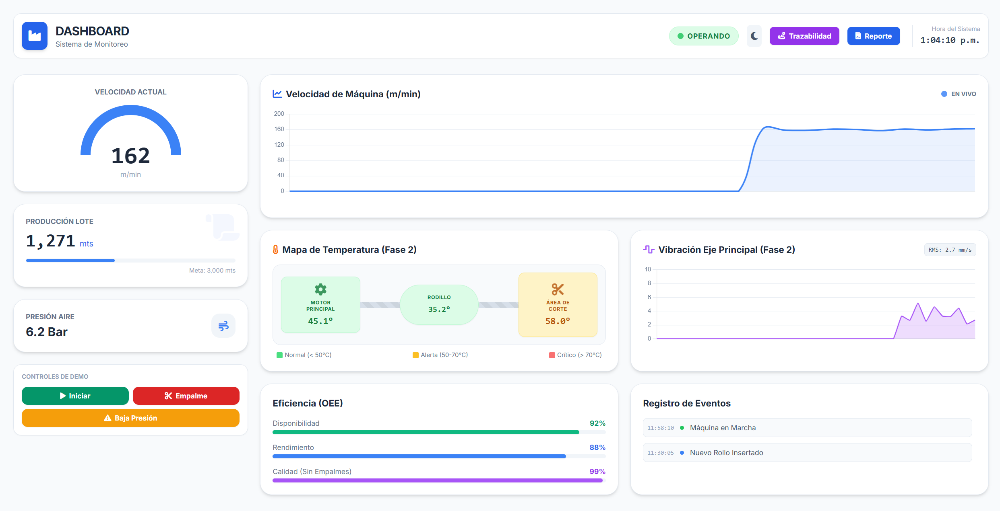

Nuestros Proyectos
Un vistazo a nuestras implementaciones más recientes.

Líneas de Producción y Control de Procesos
Programación de PLCs, pantallas HMI e integración de tableros de control para optimizar líneas de manufactura.

Líneas de Producción y Control de Procesos
Programación de PLCs, pantallas HMI e integración de tableros de control para optimizar líneas de manufactura.

Automatización BMS para Corporativos
Integración de sistemas HVAC, control de iluminación y monitoreo de energía para máxima eficiencia operativa.

Desarrollo de Software SCADA y Dashboards
Creación de plataformas a la medida para la visualización de datos en tiempo real y conectividad IT/OT multimarca.